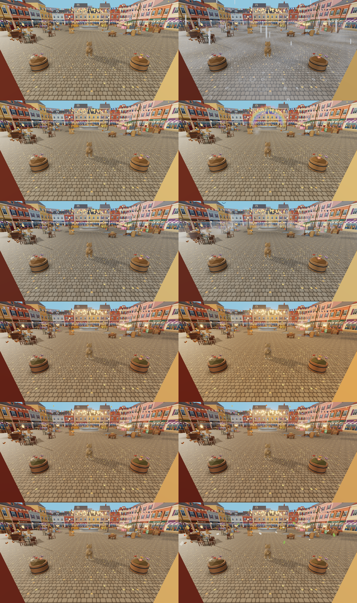

Left: before (pass 5). Right: after. Rows: (1) a rain shower: cobbles darker and shining, drops ringing on them, falling rain, awning drips, lantern halos, a grey haze; (2) it clears: steam off the cobbles and a rainbow over the fountain; (3) the morning mist: low fog about the stalls, shafts of light, bakery steam, a bird crossing the sky; (4) golden hour: a warmer key on the cobbles and the sun, halos on the lanterns; (5) a festival evening: strings of lights round the square, a banner swag over the fountain, confetti; (6) a wind gust: paper and leaves blow across the square (the awnings' billow and the bunting's streaming are movement, not visible in a still). Honest note: rows 4 and 5 differ least from the evening the square already had in pass 5 (warm tone, lit lanterns); rows 1, 2, 3 and 6 are clearly different. The pictures hold each event at full with ?force=; in play they come and go (a shower one cycle in two, a gust two in five, the festival about one day in seven of the real calendar).
